Una vez que sabemos cómo funciona un videojuego, vamos a conocer cómo pueden interactuar los distintos elementos de Scratch con las jugadoras y jugadores de un videojuego.
Empezaremos viendo algunas estructuras de control que te ayudarán en la programación de la interactividad en tu videojuego.
A continuación, veremos distintas opciones de interactividad que te permitirán aumentar la respuesta de tu videojuego a las acciones de las personas que lo utilicen.
Finalmente, descubriremos los sensores disponibles en Scratch y su relevancia en la interactividad de un videojuego.
¡Ánimo, manos a la obra!
Control de procesos en Scratch
En este apartado vamos a aprender a utilizar distintas estructuras de control que sirven para controlar el orden de ejecución de las instrucciones de un programa en Scratch.
Los bloques operadores nos ayudarán a definir las condiciones a insertar en los recuadros de los bloques de control.
En Scratch los bloques de control los vamos a encontrar en la categoría control y son de color naranja, mientras que los bloques operadores son otra categoría de color verde.
Bloques de control y operadores
La combinación de bloques de control y operadores será muy importantes para crear nuestro videojuego. Por ejemplo, para detectar cuando un objeto toca otro elemento o si se cumplen ciertas condiciones para cambiar de nivel, finalizar el juego, entre otras.
En la siguiente imagen puedes apreciar los bloques de control y operadores en Scratch.
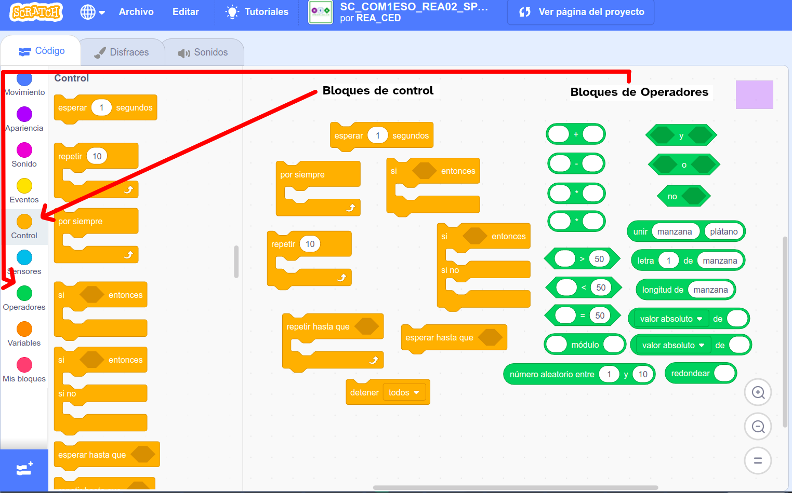
Bloques de control
Gracias a estos bloques podremos programar muchas de las acciones del videojuego que dependen del resultado de una condición, permitiendo ejecutar unas instrucciones u otras.
En el siguiente vídeo puedes ver los contenidos y ejemplos sobre las estructuras de control.
En estos bloques vamos a encontrar estructuras de repetición y estructuras condicionales.
Bloques de control de repetición y condicionales
En el caso de estos bloques de control este orden de ejecución dependerá si se cumple o no, una determinada condición.
Estas condiciones las vamos a concretar con la ayuda de los bloques de operaciones llamados operadores en Scratch.
Bloques de operadores
Consiste en una serie de bloques en Scratch que permiten realizar una variedad de operaciones. Son una categoría de bloques que se identifican con el color verde.
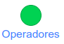
Se encuentran divididas en tres grupos: operadores matemáticos, booleanos y de cadenas de textos.
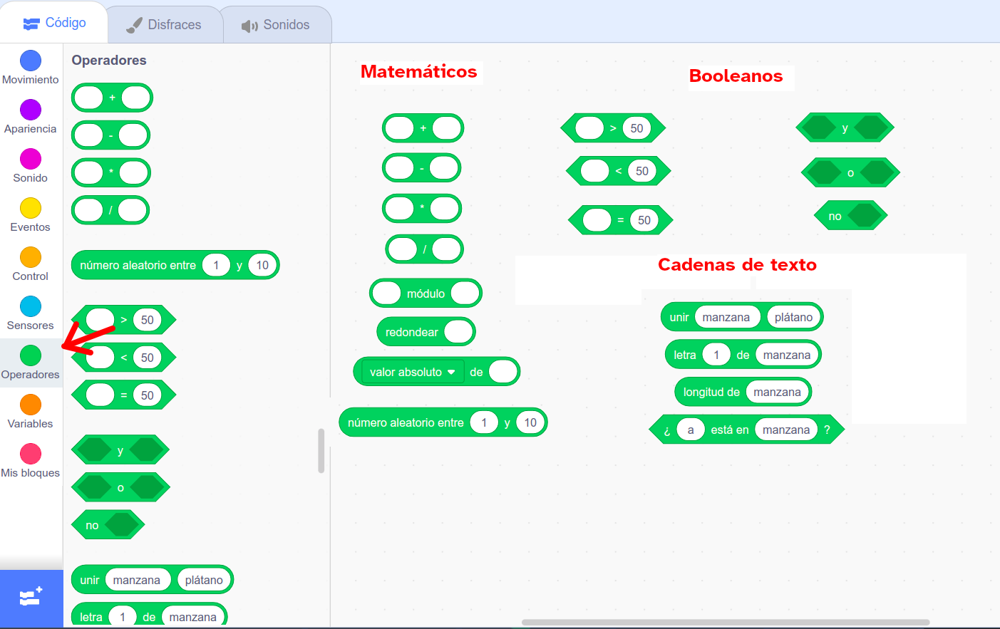
En la programación de un videojuego utilizaremos sobre todo las instrucciones booleanas dentro de las estructuras de control condicionales.
Instrucciones booleanas
Estos bloques son instrucciones que al ser utilizadas nos permiten obtener un valor cierto o falso (booleano) y dicho valor es utilizado en otra instrucción que normalmente será un bloque de control condicional, permitiendo así completar una condición.
En programación, una condición es una instrucción de que algo debe ser cierto para que algo pueda pasar. Una condición es entonces decir que “Se evalúa para verdadero” o “Se evalúa para falso”. En Scratch, son bloques cuya etiqueta dice “Si”, “Al presionar” o “Hasta que”.
Estos bloques se pueden insertar en casi todos los bloques de Scratch, aunque se debe tener en cuenta la forma ya que en algunos no se pueden insertar. Ten presente que se pueden colocar unos operadores dentro de otros.
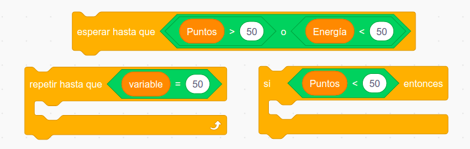
Los operadores booleanos se dividen en dos grupos: operaciones relacionales y operaciones lógicos.Operaciones booleanas relacionales
Se encargan de relacionar dos valores numéricos, determinando por ejemplo si un número dado es menor que otro o viceversa, el resultado de estas instrucciones es cierto o falso dependiendo de los números insertados por medio del teclado. Si el recuadro está vacío el bloque lo toma como un cero.
En Scratch las operaciones booleanas relacionales cuentan con tres bloques:
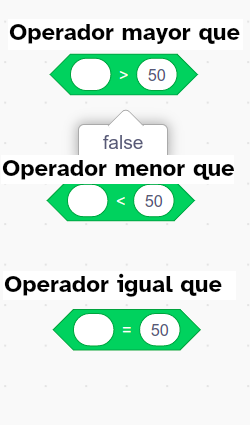
Si haces clic sobre uno de estos bloques en Scrath, obtienes el resultado de la relación entre sus dos valores: "false" o "true".
Operaciones booleanas lógicas
Los operadores lógicos son expresiones booleanas que nos permiten combinar dos o más expresiones booleanas con la finalidad de tener más precisión a la hora de tomar una decisión.
En Scratch las operaciones lógicas cuentan con tres bloques:
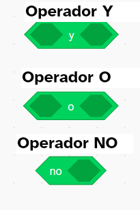
Los dos primeros operadores "Y" y "NO" evalúan dos o más expresiones, mientras que el operador "NO" solo actúa sobre una expresión.
Aumenta la interactividad con el uso de sensores
Los bloques de sensores en Scratch es una categoría que se utiliza para detectar diferentes elementos de un proyecto y se caracteriza por su color cian.
Normalmente se utilizarán los bloques de sensores junto a bloques de control.
Con su uso en un programa se pueden crear condiciones al tocar un borde de la pantalla, colores específicos, contacto con el ratón o con otros personajes.
En definitiva, nos permiten hacer que los personajes interactúen con otros o con condiciones del entorno.
Los bloques de sensores de Scratch permiten detectar las siguientes acciones:
- Tocar un objeto determinado.
- Tocar un color determinado.
- Cuando un color determinado toca a otro color concreto.
- Entrada del valor de variables por medio del teclado.
- Si se presiona alguna tecla del ratón.
- Si se presiona alguna tecla en particular.
- Distancia de nuestro objeto a otro.
- Lectura de los puertos de comunicaciones del ordenador para leer las señales de los sistemas robóticos.
A continuación, se muestran los bloques de la categoría de sensores de Scratch y una breve descripción.
Lumen dice Este vídeo te puede servir de ayuda
En el siguiente vídeo tienes información sobre los bloques de control y los operadores que te puede ayudar a comprender mejor este apartado.
La aleatoriedad en los videojuegos de Scratch
Tenemos disponible en Scratch un bloque de programación que nos permite simular la generación de números aleatorios.
Este bloque puede dar mucho juego a nuestro reto "Mi primer videojuego" con Scratch y queremos ayudarte a descubrirlo.
Este bloque se encuentra dentro de la categoría de operadores y es de color verde:
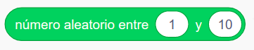
Cada vez que ejecutemos esta instrucción devolverá un número diferente entre un rango dado.Por defecto entre 1 y 10, pero puedes cambiar estos valores para utilizar los que necesites.
Es algo parecido a lanzar una moneda o un dado.
Generalmente, la utilización de los números aleatorios en Scratch lleva asociado la utilización de una variable para almacenar el valor y utilizarlo en el programa.
En los videojuegos hay ocasiones en las que necesitamos que el comportamiento de los personajes sea de manera aleatoria, al azar. A veces, de una forma y otras veces de otra.
¿Cómo quieres controlar el videojuego?
Un aspecto importante que se debe decidir cuando se diseña un videojuego consiste en elegir el periférico o mando que permitirá al usuario interactuar con los elementos del videojuego.
A continuación, te presentamos los bloques de programación para controlar un videojuego desde diferentes periféricos.
Control con el teclado
Es uno de los controles más usados.
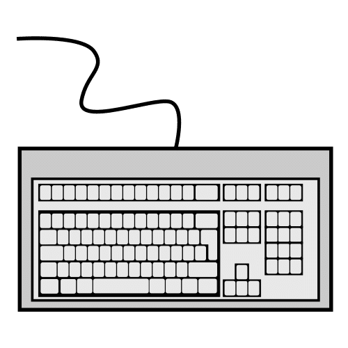
Los bloques de programación para controlar con el teclado el movimiento de un objeto en los ejes x-y pueden ser los siguientes:
Haz clic sobre la imagen para ampliarla.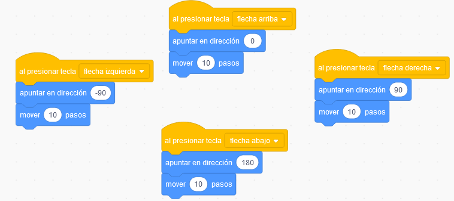
Controlar con el ratón
Es la otra forma de control más usada de los elementos en Scratch.
Para controlar los movimientos en el eje x de un objeto con el ratón, se pueden usar bloques de programación como los siguientes.
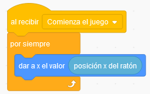
Control con la cámara web
Es un control avanzado de los elementos de Scratch.
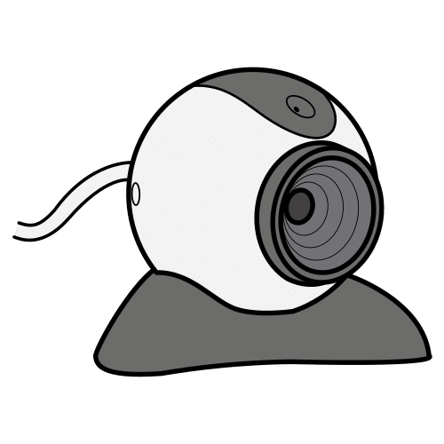
Se utiliza la extensión Sensor de vídeo. Si quieres saber más sobre ella, aquí tienes los bloques y un vídeo sobre su uso.
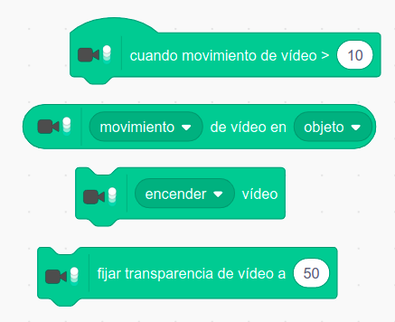
Controlar con Makey Makey
Puede ser otra opción diferente de control de los elementos del videojuego.
Makey-Makey es una placa electrónica que permite convertir prácticamente cualquier objeto que sea conductor eléctrico en algo parecido a un teclado o ratón.
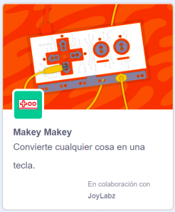
El ordenador conectado a la Makey Makey recibe sus señales como si trata de un teclado o ratón.
En Scratch se incorpora a la programación del videojuego como una extensión.

Aquí te paso los bloques asociados a esta extensión.
A continuación tienes un vídeo para que veas las posibilidades de control de un videojuego con una placa Makey Makey.